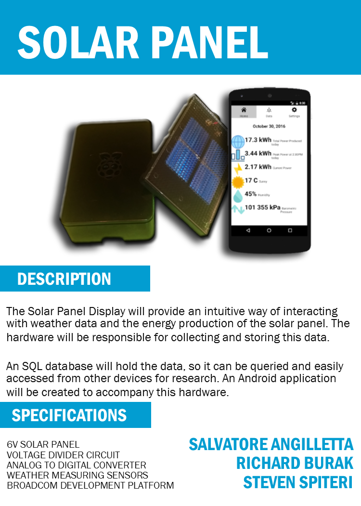
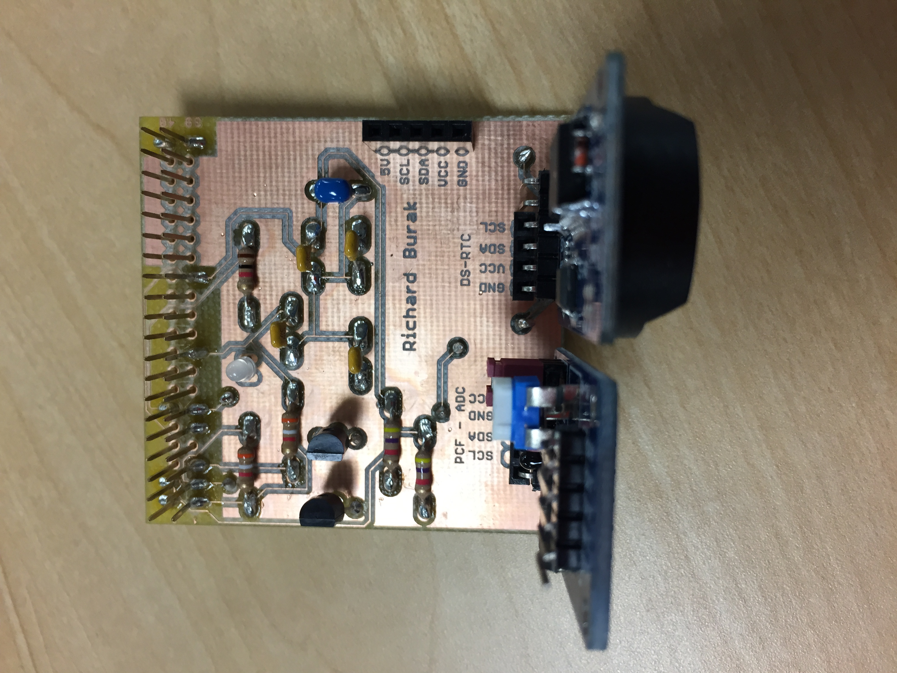
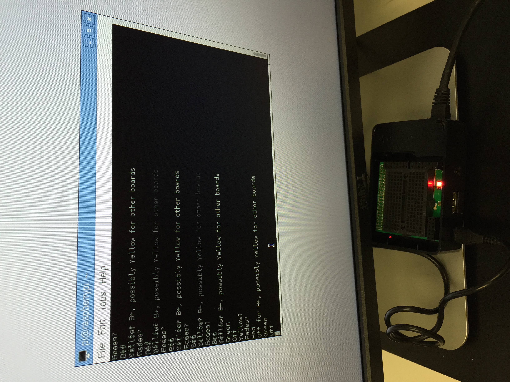

<style>
	.rotate90 {
    -webkit-transform: rotate(90deg);
    -moz-transform: rotate(90deg);
    -o-transform: rotate(90deg);
    -ms-transform: rotate(90deg);
    transform: rotate(90deg);
}
</style>

<ARTICLE ID="Article_1">
 <HEADER ID="Header_Article_1">
  <H2>Solar Panel Project</H2>
 </HEADER>
	
<SECTION ID="Section_10">
  <H3>Week 11</H3>
  <p>
    This week a plan for a custom PCB has been completed. Details of this can be found in the document attached.<br>
    Below is a screenshot of the board file we created. It is a very basic circuit, but will clean up the project nicely. This design was mainly worked on by Steven, but I will edit it to accompany my different DHT-11 breakout.<br>
    <br>Not mentioned in the report is the fanacial update. My instructor asked me to update this during class: No additional funds have been spent on the project at the time. I hope to purchase rectangular connectors to solder to my custom PCB. This should not cost much, so I will remain under budget.
    <a href="week10/Solar Project Status Report 4, Richard Burak.docx">Download - Solar Panel Project Status Report #4</a><br><br>
    <br>
  </p>
 </SECTION>

<SECTION ID="Section_9">
  <H3>Week 10</H3>
  <p>
    I hope to demonstrate my project in class this week, as making the open house may not be a possibility. I have attached my third progress report.<br>
    <a href="week09/Solar Project Status Report 3, Richard Burak.docx">Download - Solar Panel Project Status Report #3</a><br>
  </p>
 </SECTION>

<SECTION ID="Section_8">
  <H3>Week 9</H3>
  <p>
    The Solar Panel project group got together this week to begin testing circuit designs. A functioning circuit has been successfully created and tested, and all of the sensors work. Readings are also successfully displayed in the Raspberry Pi terminal, though light level and solar cell voltage will required some conversions into their respective units. Below, a 30 second build video is posted to show the progress made on the project so far, and what I plan to show next. All three group members used the same template for our videos to remain consistent. The next step will be the conversion for the two values stated above, and designing a case for the open house. The final step will be storing the data in a database.
    <video width="640" height="480" controls>
      <source src="week08/buildVideoOct.mp4" type="video/mp4">
        Your browser does not support the video tag.
    </video> <br>
    The two previous videos are still available for viewing, but are not considered as part of the build video. Finally, two circuits have been designed. One includes the Modular Sensor Hat that was previously soldered, and the other does not require it. The plan is to use the one with the Modular Sensor Hat.
  </p>
 </SECTION>

<SECTION ID="Section_7">
  <H3>Week 8</H3>
  <p>
    This week, my goal was to have a Placard ready for the project. The Solar Project members got together to create this. The placard .pub file will be uploaded to my repository, and the other members will post links to the same file.<br>
    <a href="https://github.com/richard-burak/richard-burak.github.io/blob/master/week07/SolarProjectPlacard2016.pub">Placard Publisher File</a><br>
    <br><br>
  
    Below is a short video showing the PCB successfully running on a Raspberry Pi. This will not be used in the final build video, but it has been posted as a demonstration.
      <video width="640" height="480" controls>
      <source src="week07/pcb_running.mp4" type="video/mp4">
        Your browser does not support the video tag.
    </video> <br>
  </p>
 </SECTION>

<SECTION ID="Section_6">
  <H3>Week 7</H3>
  <p>
    <a href="week06/Solar Project Status Report 2-1, Richard Burak.docx">Download - Solar Panel Project Status Report #2</a><br>
    The next step is to put the basic hardware of the project together. The circuit has been planned out, and now must be built and tested. Stated in the report above, I have completed my PCB and done basic testing. A video of the board running will be edited and posted for next week.<br>
    <br>
    <br>
    The three of us working on the project have previously made a simple light sensor circuit together. I plan to use either this circuit, or the sensor provided by the Humber PCB. This will be decided as testing of the PCB continues.<br>
    <br>
    We also got together to create the same circuit for the project. Using Fritzing, we created a layout. This will be constructed and tested in the lab period.<br>
    <br>
    The video showing off the components and tools required for the project is posted below. This will be edited to fit in the eventual build video.<br>
    <video width="640" height="480" controls>
      <source src="week06/Solar Parts Video.mp4" type="video/mp4">
        Your browser does not support the video tag.
    </video> <br>
  </p>
 </SECTION>

 <SECTION ID="Section_5">
  <H3>Week 6</H3>
  <p>
    Below is a document containing an in-depth status report about the project. It is on schedule and under budget so far! The materials are expected to arrive on Wednesday October 5th. Once they have been aquired, a video and images can be posted.<br>
	  <a href="week04/Solar Project Status Report 1, Richard Burak.docx">Download - Solar Panel Project Status Report #1</a><br>
  </p>
 </SECTION>
	
	
<SECTION ID="Section_4">
  <H3>Week 5</H3>
  <p>
    With the budget proposed, I now understand the materials required. Anything that I am not in possession of will be ordered from RobotShop, or purchased from Sayal. A log of the items will be posted once the they have arrived.<br>
		<a href="week03/Solar Project Budget, Richard Burak.xlsx">Download - Solar Panel Project Budget</a>
  </p>
 </SECTION>
	
	
 <SECTION ID="Section_3">
  <H3>Week 4</H3>
  <p>
    A schedule has been outlined, and I now have an idea of what to work on. I will be sure to finish everything on time and according to schedule.<br> 
		 <a href="week02/Project Schedule, Richard Burak.mpp">Download - Solar Panel Project Schedule</a>
  </p>
 </SECTION>
 
 <SECTION ID="Section_2">
 <H3>Week 3</H3>
  <p>
    The project was proposed, and the proposal was accepted. Preliminary work on the Solar Panl project has begun.<br>
		 <a href="week02/CENG317ProjectProposalRichardBurak.docx">Download - Solar Panel Project Proposal</a>

 </SECTION>
 
 <SECTION ID="Section_1">
 <H3>Week 2</H3>
  <p>
    In the first week, we were instructed to make an LED blink on a Raspberry Pi. This lab was meant to teach us how to use and interface with the Pi.<br>
		LED on (Green)<br>
		<br>
		LED Off<br>
		<br>
		LED on (Red) <br>
		<br>
  </p>
 </SECTION>
 <SECTION ID="Downloads">
 <H3>Downloads</H3>
  <p>
    <a href="week02/CENG317ProjectProposalRichardBurak.docx">Download - Solar Panel Project Proposal</a><br>
    <a href="week02/Project Schedule, Richard Burak.mpp">Download - Solar Panel Project Schedule</a><br>
    <a href="week03/Solar Project Budget, Richard Burak.xlsx">Download - Solar Panel Project Budget</a><br>
    <a href="week04/Solar Project Status Report 1, Richard Burak.docx">Download - Solar Panel Project Status Report #1</a><br>
    <a href="week06/Solar Project Status Report 2-1, Richard Burak.docx">Download - Solar Panel Project Status Report #2</a><br>
    <a href="https://github.com/richard-burak/richard-burak.github.io/blob/master/week07/SolarProjectPlacard2016.pub">Repository Link - Solar Panel Project Placard</a><br>
    <a href="week09/Solar Project Status Report 3, Richard Burak.docx">Download - Solar Panel Project Status Report #3</a><br>
    <a href="week10/Solar Project Status Report 4, Richard Burak.docx">Download - Solar Panel Project Status Report #4</a><br>
  </p>
 </SECTION>

</ARTICLE>
